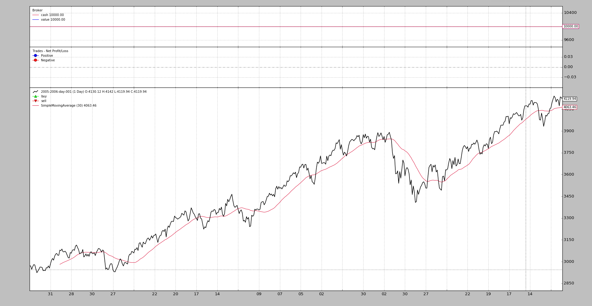

Although backtesting is meant to be an automated process based on mathematical calculations, it is often the case that one wants to actually visualize what’s going on. Be it with an existing algorithm which has undergone a backtesting run or looking at what really indicators (built-in or custom) deliver with the data.
And because everything has a human being behind it, charting the data feeds, indicators, operations, evolution of cash and portfolio value can help the humans to better appreciate what’s going on, discard/modify/create ideas and whatever the human looking at the chart may do with the visual information.
That’s why backtrader, using the facilities provided by matplotlib,
provides built-in charting facilities.
Any backtesting run can be plotted with the invocation of a single method:
cerebro.plot()
Of course this is usually the last command issued like in this simple code which uses one of the sample data from the backtrader sources.
from __future__ import (absolute_import, division, print_function,
unicode_literals)
import backtrader as bt
class St(bt.Strategy):
def __init__(self):
self.sma = bt.indicators.SimpleMovingAverage(self.data)
data = bt.feeds.BacktraderCSVData(dataname='../../datas/2005-2006-day-001.txt')
cerebro = bt.Cerebro()
cerebro.adddata(data)
cerebro.addstrategy(St)
cerebro.run()
cerebro.plot()
And this yields the following chart.
The chart includes 3 Observers which in this case and given the lack of any trading are mostly pointless
A
CashValueobserver which as the name implies keeps track of theCashand total portolioValue(including cash) during the life of the backtesting runA
TradeObserver which shows, at the end of a trade, the actual Profit and LossA trade is defined as opening a position and taking the position back to
0(directly or crossing over from long to short or short to long)A
BuySellobserver which plots (on top of the prices) where buy and sell operations have taken place
These 3 Observers are automatically added by cerebro, and are controlled
with the stdstats parameter (default: True). Do the following to
disable them if you wish:
cerebro = bt.Cerebro(stdstats=False)
or later when running as in:
cerebro = bt.Cerebro()
...
cerebro.run(stdstats=False)
Although the Observers have already been mentioned above in the
introduction, they are not the only elements to get plotted. These 3 things get
plotted:
Data Feeds added to Cerebro with
adddata,replaydataandresampledataIndicators declared at strategy level (or added to cerebro with
addindicatorwhich is purely meant for experimentation purposes and has the indicator added to a dummy strategy)Observers added to cerebro with
addobserverThe Observers are lines objects which run in sync with the strategy and have access to the entire ecosystem, to be able to track things like
CashandValue
Indicators and Observers have several options that control how they have to be plotted on the chart. There are 3 big groups:
- Options affecting the plotting behavior of the entire object
- Options affecting the plotting behavior of individual lines
- Options affecting the SYSTEM wide plotting options
These are controlled by this data set in Indicators and Observers:
plotinfo = dict(plot=True,
subplot=True,
plotname='',
plotskip=False,
plotabove=False,
plotlinelabels=False,
plotlinevalues=True,
plotvaluetags=True,
plotymargin=0.0,
plotyhlines=[],
plotyticks=[],
plothlines=[],
plotforce=False,
plotmaster=None,
plotylimited=True,
)
Although plotinfo is shown as a dict during class definition, the
metaclass machinery of backtrader turns that into an object which is
inherited and can undergo even multiple inheritance. Than means:
- If a subclass changes for example a value like
subplot=Truetosubplot=False, subclasses further down the hierarchy will have the latter as the default value forsubplot
There are 2 methods of giving value to these parameters. Let’s look at a
SimpleMovingAverage instantiation for the 1st method:
sma = bt.indicators.SimpleMovingAverage(self.data, period=15, plotname='mysma')
As can be inferred from the example, any **kwargs not consumed by the
SimpleMovingAverage constructor will be parsed (if possible) as
plotinfo values. The SimpleMovingAverage has a single parameter defined
which is period. And this means that plotname will be matched against
the parameter of the same name in plotinfo.
The 2nd method:
sma = bt.indicators.SimpleMovingAverage(self.data, period=15)
sma.plotinfo.plotname = 'mysma'
The plotinfo object instantiated along the SimpleMovingAverage can be
accessed and the parameters inside can also be accessed with the standard
Python dot notation. Easy and possibly clearer than the syntax abve.
plot: whether the object has to be plotted
subplot: whether to plot along the data or in an independent subchart. Moving Averages are an example of plotting over the data. Stochastic and RSI are examples of things plotted in a subchart on a different scale.
plotname: name to use on the chart instead of the class name. As in the example abovemysmainstead ofSimpleMovingAverage
plotskip(deprecated): and old alias ofplot
plotabove: whether to plot above the data. Else plot below. This has only effect ifsubplot=True
plotlinelabels: whether to plot the names of the individudal lines along the data in the legend on the chart whensubplot=FalseExample: The Bollinger Bands have 3 lines but the indicator is plotted on top of the data. It seems sensible to have the legend only display a single name like
BollingerBandsrather than having the name of the 3 individual lines displayed (mid,top,bot)A use case for this is the
BuySellobserver for which it makes sense to display the name of the 2 lines and its markers:BuyandSellto make it clear for the end user what is what.
plotlinevalues: controls whether the legend for the lines in indicators and observers has the last plotted value. Can be controlled on a per-line basis with_plotvaluefor each line
plotvaluetags: controls whether a value tag with the last value is plotted on the right hand side of the line. Can be controlled on a per-line basis with_plotvaluetagfor each line
plotymargin: margin to add to the top and bottom of individual subcharts on the graphIt is a percentage but 1 based. For example: 0.05 -> 5%
plothlines: an iterable containing values (within the scale) at which horizontal lines have to be plotted.This for example helps for the classical indicators with overbought, oversold areas like the
RSIwhich usually has lines plotted at70and30
plotyticks: an iterable containing values (within the scale) at which value ticks have to specifically be placed on the scaleFor example to force the scale to have a
50to identify the mid point of the scale. Although this seems obvious, the indicators use an auto-scaling mechanism and the50may not be obviously be in the centre if an indicator with a0-100scale moves between 30-95 on a regular basis.
plotyhlines: an iterable containing values (within the scale) at which horizontal lines have to be plotted.This can take over both
plothlinesandplotyticks.If none of the above are defined, then where to place horizontal lines and ticks will be entirely controlled by this value
If any of the above are defined they have precedence over the values present in this option
plotforce: sometimes and thus the complex process of matching data feeds to indicators and bla, bla, bla … a custom indicator may fail to plot. This is a last resort mechanism to try to enforce plotting.Use it if all else fails
plotmaster: an Indicator/Observer has a master which is the data on which is working. In some cases plotting it with a different master may be wished needed.A use case is the
PivotPointindicator which is calculated on Monthly data but is meant for Daily data. It only makes sense to plot it on the daily data which is where the indicator makes sense.
plotylimited: currently only applies to data feeds. IfTrue(default), other lines on the data plot don’t change the scale. Example: Bollinger Bands (top and bottom) may be far away from the actual absolute minimum/maximum of the data feed. With`plotlimited=True, those bands remain out of the chart, because the data controls the scaling. If set toFalse, the bands affects the y-scale and become visible on the chartA use case is the
PivotPointindicator which is calculated on Monthly data but is meant for Daily data. It only makes sense to plot it on the daily data which is where the indicator makes sense.
Indicators/Observers have lines and how this lines are plotted can be
influenced with the plotlines object. Most of options specified in
plotlines are meant to be directly passed over to matplotlib when
plotting. The documentation relies therefore on examples of things that have
been done.
IMPORTANT: The options are specified on a per-line basis.
Some of the options are controlled directly by backtrader. These all start
with an underscore (_):
_plotskip(boolean) which indicates that plotting of a specific line has to be skipped if set toTrue
_plotvalue(boolean) to control if the legend of this line will contain the last plotted value (default isTrue)
_plotvaluetag(boolean) to control if a righ hand side tag with the last value is plotted (default isTrue)
_name(string) which changes the plot name of a specific line
_samecolor(boolean) this forces the next line to have the same color as the previous one avoiding thematplotlibdefault mechanism of cycling trough a color map for each new plotted element
_method(string) which chooses the plotting methodmatplotlibwill use for the element. If this is not specified, then the most basicplotmethod will be chosen.Example from
MACDHisto. Here thehistoline is plotted as abarwhich is the industry de-facto standard. The following definition can be found in the definition ofMACDHisto:lines = ('histo',) plotlines = dict(histo=dict(_method='bar', alpha=0.50, width=1.0))
alphaandwidthare options for matplotlib
_fill_gt/_fill_ltAllow filling between the given line and:
- Another line
- A numeric value
The arguments is an iterable of 2 elements in which:
The 1st argument is a string (name of reference line) or a numeric value
The filling will be done in between the own values and the values of the line or the numeric value
The 2nd argument is either:
- A string with a colour name (matplotlib compatible) or hex specification (see matloplit examples)
or
- An iterable where the 1st element is the string/hex value for the colour and the second element is a numeric value specifying the alpha transparency (default:
0.20controlled withfillalphain a plotting scheme)Examples:
# Fill for myline when above other_line with colour red plotlines = dict( myline=dict(_fill_gt('other_line', 'red')) ) # Fill for myline when above 50 with colour red plotlines = dict( myline=dict(_fill_gt(50, 'red)) ) # Fill for myline when above other_line with colour red and 50% # transparency (1.0 means "no transparency") plotlines = dict( myline=dict(_fill_gt('other_line', ('red', 0.50))) )
- Ue the name
_XwhereXstands for a digit in a zero-based index. This means that the options are for lineX
A use case from OscillatorMixIn:
plotlines = dict(_0=dict(_name='osc'))
As the name implies, this is a mixin class intended to be used in multiple inheritance schemes (specifically on the right hand side). The mixin has no knowledge of the actual name of the 1st line (index is zero-based) from the other indicator that will be part of the multiple inheritance mix.
And that’s why the options are specified to be for: _0. After the
subclassing has taken place the 1st line of the resulting class will have the
name osc in plot.
The BuySell observer has the following:
plotlines = dict(
buy=dict(marker='^', markersize=8.0, color='lime', fillstyle='full'),
sell=dict(marker='v', markersize=8.0, color='red', fillstyle='full')
)
The buy and sell lines have options which are passed directly to
matplotlib to define marker, markersize, color and fillstyle. All
these options are defined in matplotlib
The Trades observer has the following:
...
lines = ('pnlplus', 'pnlminus')
...
plotlines = dict(
pnlplus=dict(_name='Positive',
marker='o', color='blue',
markersize=8.0, fillstyle='full'),
pnlminus=dict(_name='Negative',
marker='o', color='red',
markersize=8.0, fillstyle='full')
)
Here the names of the lines have been redefined from for example pnlplus to
Positive by using _name. The rest of the options are for matplotlib
The DrawDown observer:
lines = ('drawdown', 'maxdrawdown',)
...
plotlines = dict(maxdrawdown=dict(_plotskip='True',))
This one defines two lines to let the end users access not only the value of
the current drawdown but also its maximum value (maxdrawdown). But the
latter is not plotted due to _plotskip=True
The BollingerBands indicator:
plotlines = dict(
mid=dict(ls='--'),
top=dict(_samecolor=True),
bot=dict(_samecolor=True),
)
Here the mid line will have a dashed style and the top and bot
lines will have the same color as the mid line.
The Stochastic (defined in _StochasticBase and inherited):
lines = ('percK', 'percD',)
...
plotlines = dict(percD=dict(_name='%D', ls='--'),
percK=dict(_name='%K'))
The slower line percD is plotted with a dashed style. And the names of
the lines are changed to include fancy % signs (%K and %D) which
cannot be used in name definitions in Python
When dealing with Indicators and Observers the following methods are supported to further control plotting:
_plotlabel(self)Which should return a list of things to conform the labels which will be placed in between parentheses after the name of the Indicators or Observer
An example from the
RSIindicator:def _plotlabel(self): plabels = [self.p.period] plabels += [self.p.movav] * self.p.notdefault('movav') return plabelsAs can be seen this method returns:
An
intwhich indicates the period configured for theRSIand if the default moving average has been changed, the specific classIn the background both will be converted to a string. In the case of the class an effort will be made to just print the name of the class rather than the complete
module.namecombination.
_plotinit(self)Which is called at the beginning of plotting to do whatever specific initialization the indicator may need. Again, an example from
RSI:def _plotinit(self): self.plotinfo.plotyhlines = [self.p.upperband, self.p.lowerband]Here the code assigns a value to
plotyhlinesto have horizontal lines (thehlinespart) plotted at specificyvalues.The values of the parameters
upperbandandlowerbandare used for this, which cannot be known in advance, because the parameters can be changed by the end user
First the signature of plot within cerebro:
def plot(self, plotter=None, numfigs=1, iplot=True, **kwargs):
Which means:
plotter: an object/class containing as attributes the options controlling the system wide plottingIf
Noneis passed a defaultPlotSchemeobject (see below) will be instantiated
numfigs: in how many independent charts a plot has to be brokenSometimes a chart contains too many bars and will not be easily readable if packed in a single figure. This breaks it down in as many pieces as requested
iplot: automatically plot inline if running inside a Jupyter Notebook
**kwargs: the args will be used to change the values of the attributes ofplotteror the defaultPlotSchemeobject created if noplotteris passed.
This object contains all the options that contol system-wide plotting. The options are documented in the code:
class PlotScheme(object):
def __init__(self):
# to have a tight packing on the chart wether only the x axis or also
# the y axis have (see matplotlib)
self.ytight = False
# y-margin (top/bottom) for the subcharts. This will not overrule the
# option plotinfo.plotymargin
self.yadjust = 0.0
# Each new line is in z-order below the previous one. change it False
# to have lines paint above the previous line
self.zdown = True
# Rotation of the date labes on the x axis
self.tickrotation = 15
# How many "subparts" takes a major chart (datas) in the overall chart
# This is proportional to the total number of subcharts
self.rowsmajor = 5
# How many "subparts" takes a minor chart (indicators/observers) in the
# overall chart. This is proportional to the total number of subcharts
# Together with rowsmajor, this defines a proportion ratio betwen data
# charts and indicators/observers charts
self.rowsminor = 1
# Distance in between subcharts
self.plotdist = 0.0
# Have a grid in the background of all charts
self.grid = True
# Default plotstyle for the OHLC bars which (line -> line on close)
# Other options: 'bar' and 'candle'
self.style = 'line'
# Default color for the 'line on close' plot
self.loc = 'black'
# Default color for a bullish bar/candle (0.75 -> intensity of gray)
self.barup = '0.75'
# Default color for a bearish bar/candle
self.bardown = 'red'
# Level of transparency to apply to bars/cancles (NOT USED)
self.bartrans = 1.0
# Wether the candlesticks have to be filled or be transparent
self.barupfill = True
self.bardownfill = True
# Wether the candlesticks have to be filled or be transparent
self.fillalpha = 0.20
# Wether to plot volume or not. Note: if the data in question has no
# volume values, volume plotting will be skipped even if this is True
self.volume = True
# Wether to overlay the volume on the data or use a separate subchart
self.voloverlay = True
# Scaling of the volume to the data when plotting as overlay
self.volscaling = 0.33
# Pushing overlay volume up for better visibiliy. Experimentation
# needed if the volume and data overlap too much
self.volpushup = 0.00
# Default colour for the volume of a bullish day
self.volup = '#aaaaaa' # 0.66 of gray
# Default colour for the volume of a bearish day
self.voldown = '#cc6073' # (204, 96, 115)
# Transparency to apply to the volume when overlaying
self.voltrans = 0.50
# Transparency for text labels (NOT USED CURRENTLY)
self.subtxttrans = 0.66
# Default font text size for labels on the chart
self.subtxtsize = 9
# Transparency for the legend (NOT USED CURRENTLY)
self.legendtrans = 0.25
# Wether indicators have a leged displaey in their charts
self.legendind = True
# Location of the legend for indicators (see matplotlib)
self.legendindloc = 'upper left'
# Plot the last value of a line after the Object name
self.linevalues = True
# Plot a tag at the end of each line with the last value
self.valuetags = True
# Default color for horizontal lines (see plotinfo.plothlines)
self.hlinescolor = '0.66' # shade of gray
# Default style for horizontal lines
self.hlinesstyle = '--'
# Default width for horizontal lines
self.hlineswidth = 1.0
# Default color scheme: Tableau 10
self.lcolors = tableau10
# strftime Format string for the display of ticks on the x axis
self.fmt_x_ticks = None
# strftime Format string for the display of data points values
self.fmt_x_data = None
The PlotScheme class defines a method which can be overriden in subclasses
which returns the next color to be used:
def color(self, idx)
Where idx is the current index to the line being plotted on a individual
subchart. The MACD for example plots 3 lines and hence the idx variable
will only have the following values: 0, 1 and 2. The next chart
(maybe another indicator) will star the count again at 0.
The default color scheme used in backtrader uses (as seen above) is the
Tableau 10 Color Palette with the index modified to be:
tab10_index = [3, 0, 2, 1, 2, 4, 5, 6, 7, 8, 9]
By overriding the color method or passing a lcolors variable to
plot (or in a subclass of PlotScheme) the colouring can be completely
changed.
The source code contains also the defintions for the Tableau 10 Light and
the Tableau 20 color palettes.
{kind=link}